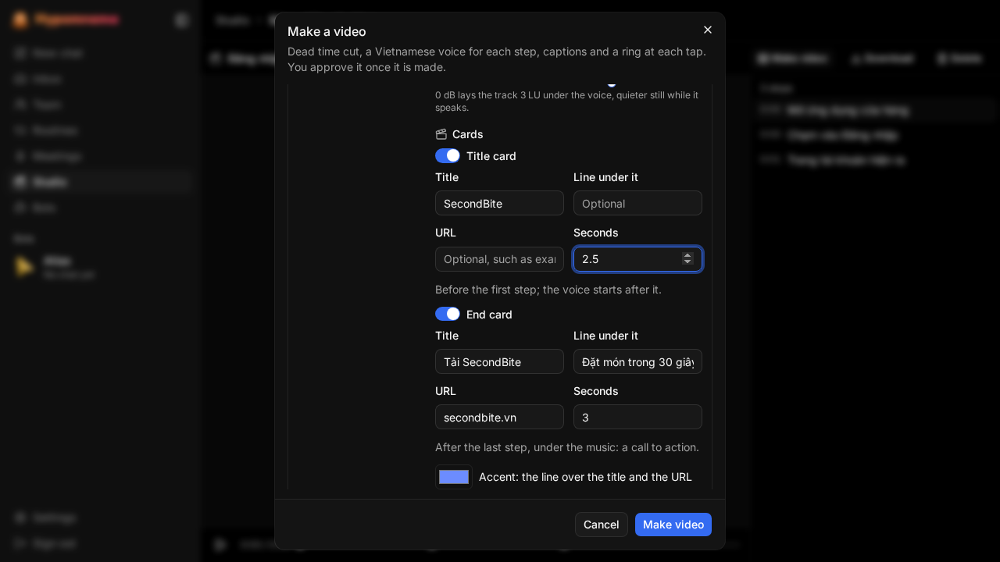
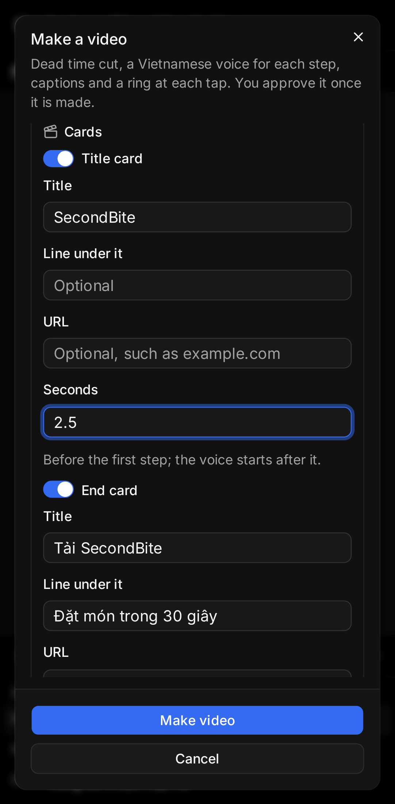
The sample images are the server's real render (compose.CardStill, pinned ffmpeg), served through the test's fake API for these shots.
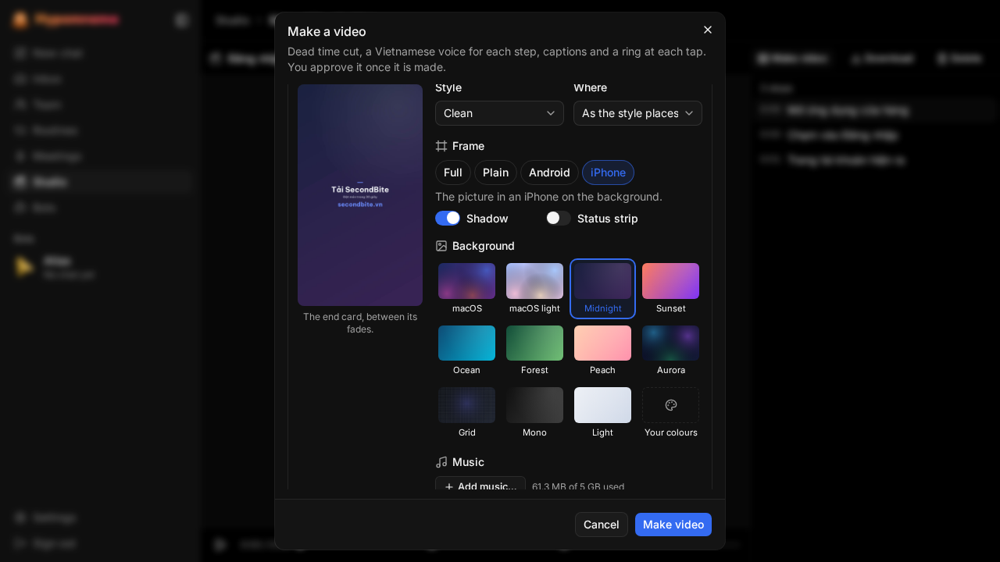
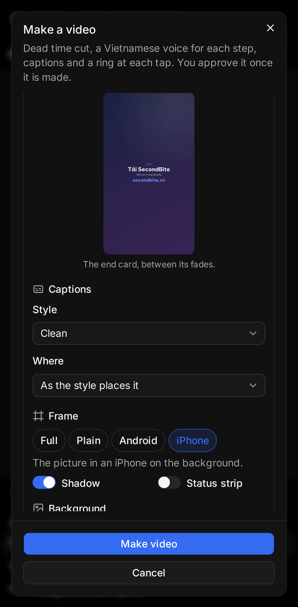
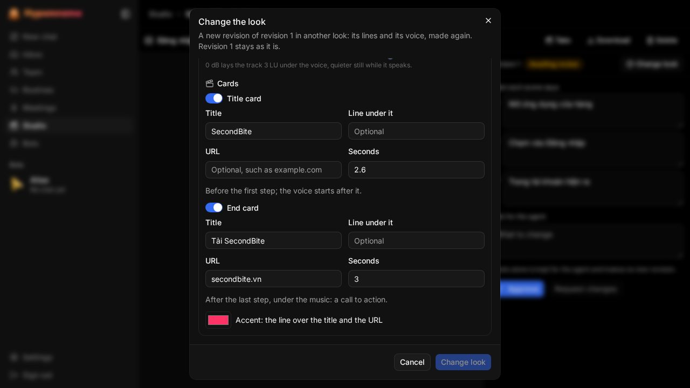
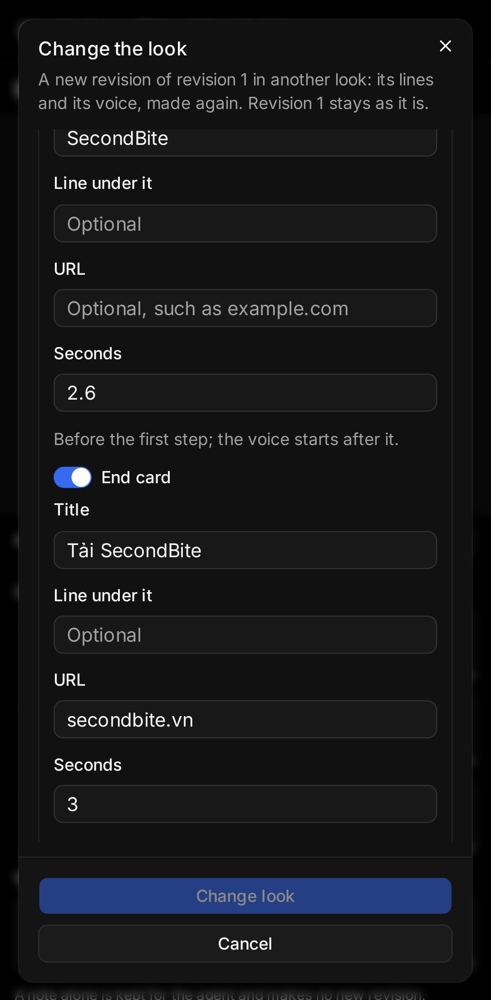
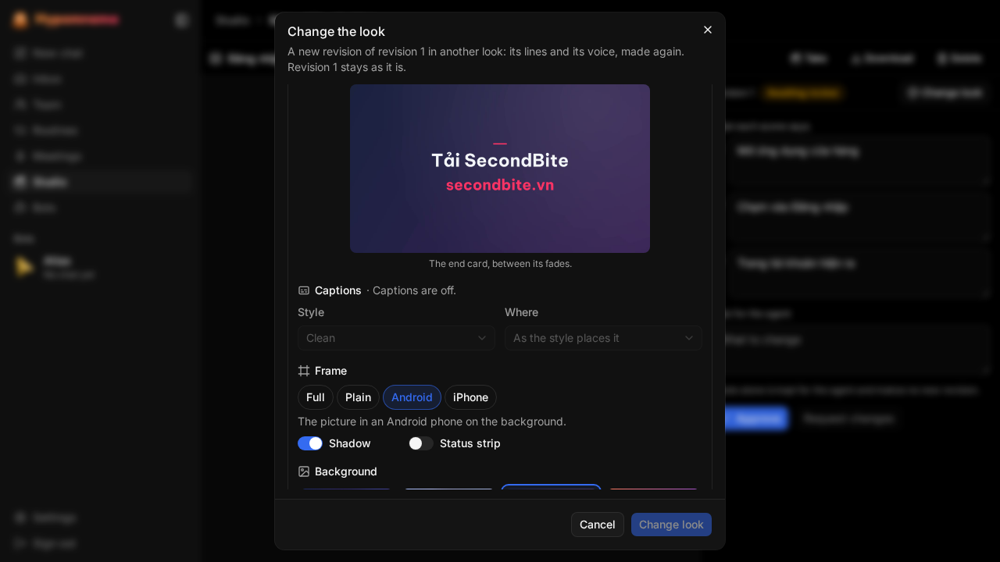
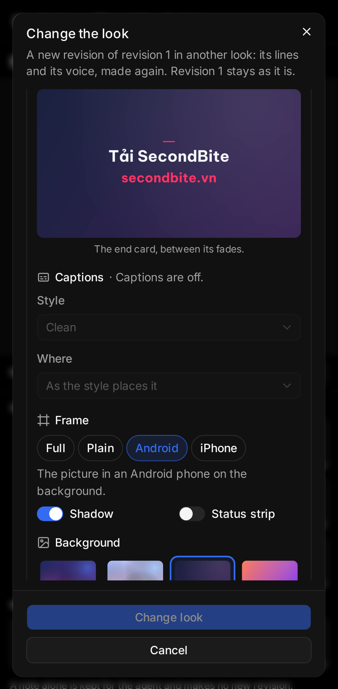
The store link of the review (63 characters) at 9:16 and 16:9, and a URL of the API's 200 characters at 9:16: shrunk to the subtitle's size, then broken where it reaches 78% of the width.
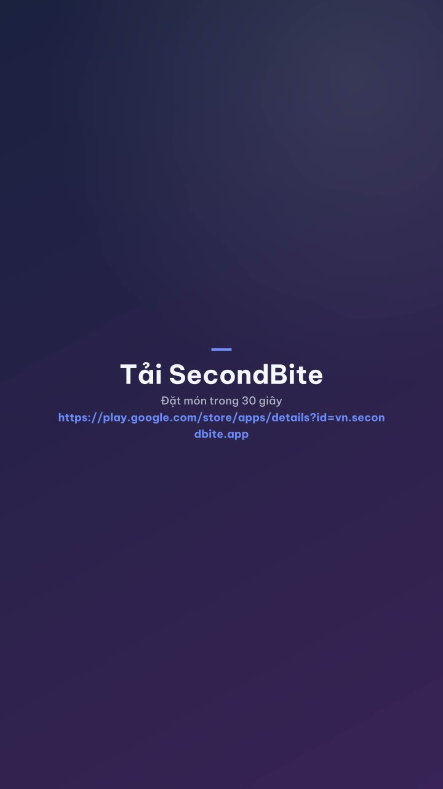
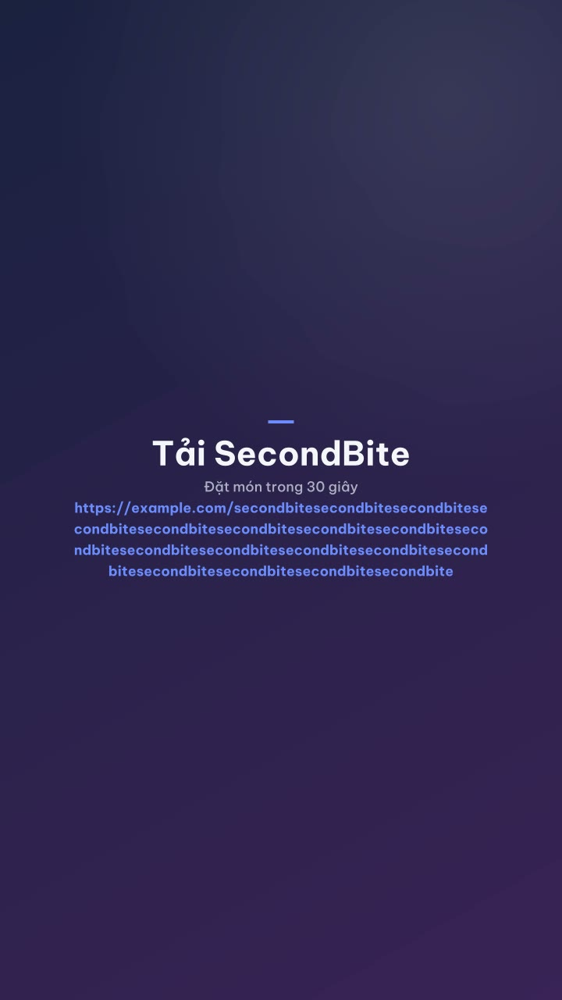
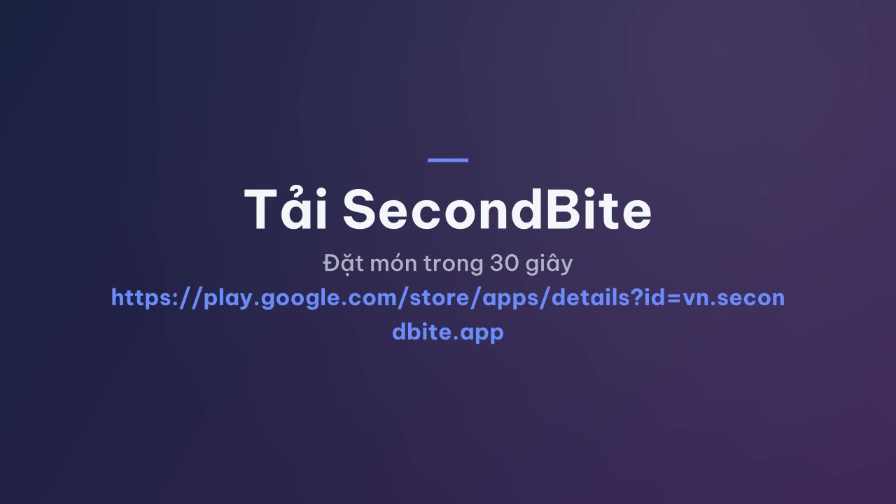
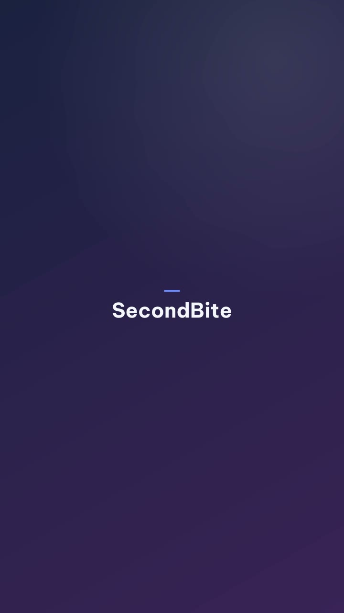
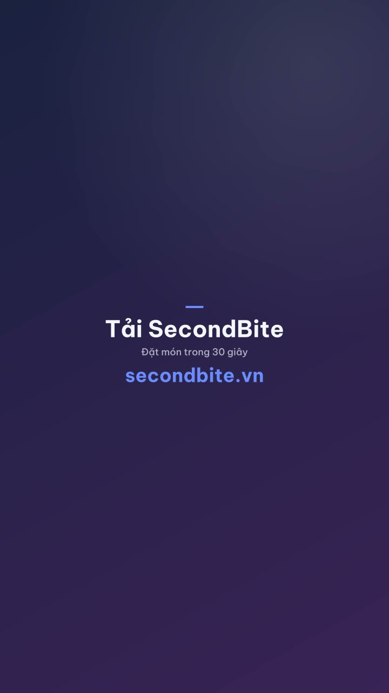